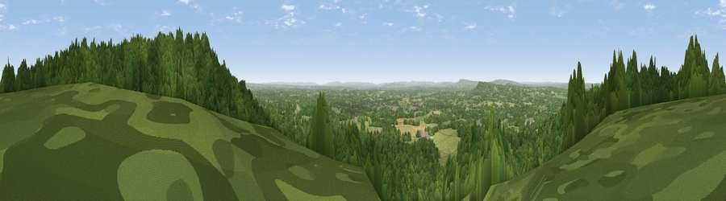

Viewpoint near Rowly
#11243 in England · top 8% of its area beats it · near RowlyWhere it is
The exact computed spot (TQ 06625 42425). Click the marker for map links.
The view, rendered

A 360° render of this exact spot computed from the terrain model, tree cover and land cover — summer colours, afternoon light, calibrated against photographs of famous viewpoints. Real trees, hedges and buildings will differ in detail.
The panorama
Grey silhouette: terrain skyline in each direction (720 bearings, Earth curvature and refraction included). Dashed green: skyline with trees (+15 m) and buildings (+8 m) as obstacles. Blue strip: how far the ground is visible on each bearing.
Where the view opens
Wedge length = distance to the farthest visible ground on that bearing (vegetation-aware). Rings at 10, 25 and 50 km.
What fills the view
74% woodland · 22% grassland · 3% cropland · 1% built-up
Angular shares of the visible panorama (visual magnitude), not map area. Landscape diversity 0.32 (0–1 Shannon).
Key numbers
More beautiful places nearby
The staircase of upgrades: each row has a higher view potential than everything closer. Driving times are estimates from straight-line distance, calibrated against real road routing — check an actual route before setting out.
| Place | Direction | Drive | Score |
|---|---|---|---|
| Viewpoint near Rowly | E · 0 km | ~2 min | 65.5 |
| Pitch Hill | E · 2 km | ~4 min | 68.2 |
| Viewpoint near Holmbury St Mary | E · 4 km | ~9 min | 69.3 |
| Viewpoint near Hascombe | WSW · 7 km | ~14 min | 69.5 |
| Viewpoint near Coldharbour | E · 7 km | ~15 min | 71.3 |
| Viewpoint near Fernhurst | SW · 20 km | ~33 min | 75.1 |
| Barlavington Down | SSW · 29 km | ~45 min | 77.3 |
| Viewpoint near Amberley | S · 30 km | ~47 min | 82.3 |
51.17114, -0.47624 · source: screening · position refined by local search. Computed location — check access rights before visiting.